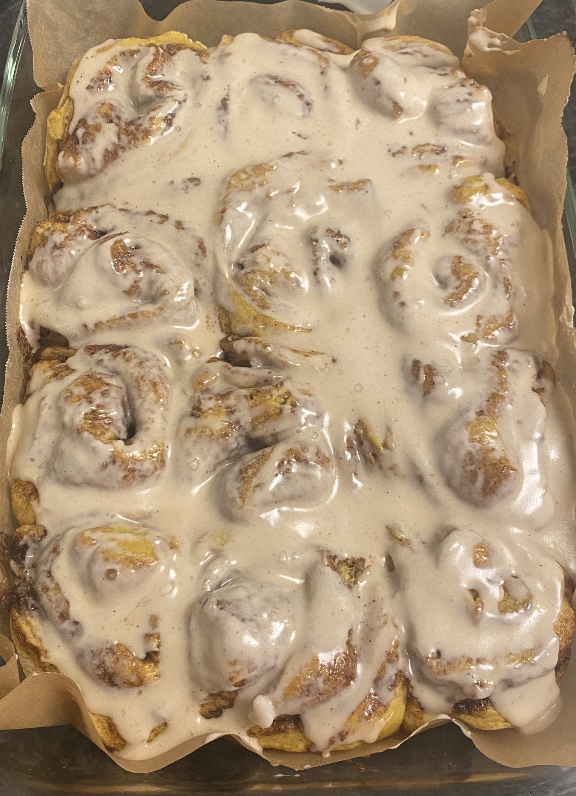

Ingredients
Dough
- 2 cups unsweetened soy milk
- 1/2 cup granulated sugar
- 2 packets (4 1/2 tsp) quick rise yeast
- 1/2 cup vegan butter, melted
- 1/2 tsp salt
- 4 1/2 cups all purpose flour, plus more as needed
Filling
- 6 tbsp softened vegan butter
- 1/2 cup brown sugar
- 2 tbsp ground cinnamon
Cream Cheese Frosting
- 8 oz vegan cream cheese
- 1 1/2 cups powdered sugar
- 1/2 tsp pure vanilla extract
Instructions
- Warm the soy milk in the microwave for 1 minute and 30 seconds.
- In a large bowl, mix the warm soy milk, sugar, and yeast; let it sit for 5 minutes.
- Add the melted vegan butter, salt, and flour. Stir with a large spoon until it comes together. You can add additional flour, 1/3 cup at a time, until the mixture is soft and slightly sticky but pulls away from the sides of the bowl.
- Turn the dough onto floured surface and knead for 3-4 minutes, until you have a smooth ball of dough. Place the dough back in the bowl, cover with a towel, and let it rise in an oven with the door cracked (turn the oven to 170 degrees F, then turn it off).
- Preheat the oven to 375 degrees F.
- Sprinkle a clean counter with flour. Punch the dough down, then roll it out to a large rectangle about 1/2 inch thick. Sprinkle more flour as needed.
- Spread the 6 tbsp butter over the dough, leaving an inch around the edges. Follow with the brown sugar and cinnamon.
- Starting with the long end closest to you, roll the dough into a tight log. Cut into 12 evenly-sized rolls and place in a 9x13 sprayed casserole dish.
- Bake for 20-30 minutes.
- While the rolls are baking, whisk the the cream cheese, vanilla, and sweetener together.
- Allow the rolls to cool for 10 minutes, then cover with the icing. Enjoy!
- NOTE: For pumpkin cinnamon rolls, make the following changes to the dough ingredients: 1 1/2 cups soy milk, 1/4 cup melted vegan butter, 3/4 cup pumpkin puree, 1 tbsp pumpkin pie spice.